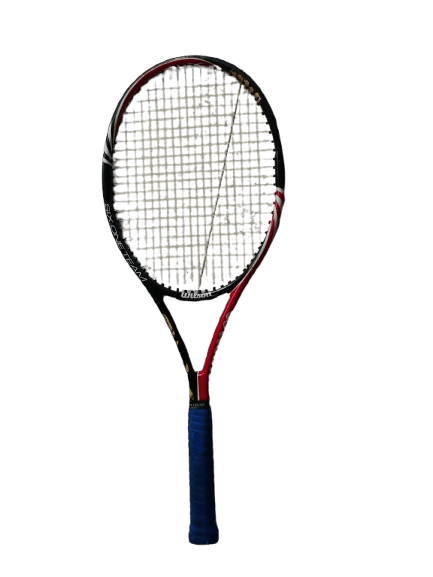

My Daily Life
Today 01.10.25, I am having a great day I found a 300 dollar fancy baseball racket in an old house my dad got along with some big artwork from a movie. Then I had an interview with Scots College and got accepted. I am extremely excited to go the man interviewing me said he liked that I was wearing a suit and I was looking sharp. I really liked that compliment because while I didn't make it, I sewed the inside pockets and had ironed my suit the night before and learned how to tie a tie again. I used to be able to tie a tie but then I forgot. I am now very happy to be going soon!
